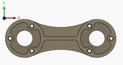
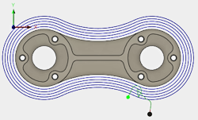

Используется для выполнения нескольких разрезов вокруг выбранного контура. Это активизирует дополнительные параметры для управления шагом и числом разрезов.


Параметр "Черновые проходы" отключен
Черновые проходы включены с
максимальным шагом 3 мм